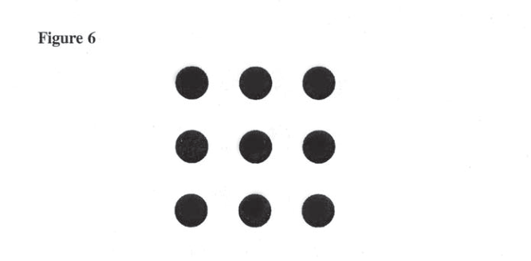

Chapter 6 Keeping an Open Mind
Minds are like parachutes. They only function when they are open. After reviewing how and why thinking gets channeled into mental ruts, this chapter looks at mental tools to help analysts keep an open mind, question assumptions, see different perspectives, develop new ideas, and recognize when it is time to change their minds.
A new idea is the beginning, not the end, of the creative process. It must jump over many hurdles before being embraced as an organizational product or solution. The organizational climate plays a crucial role in determining whether new ideas bubble to the surface or are suppressed.
* * * * * * * * * * * * * * * * * * *
Major intelligence failures are usually caused by failures of analysis, not failures of collection. Relevant information is discounted, misinterpreted, ignored, rejected, or overlooked because it fails to fit a prevailing mental model or mind-set.65 The “signals” are lost in the “noise.”66 How can we ensure that analysts remain open to new experience and recognize when long-held views or conventional wisdom need to be revised in response to a changing world?
Beliefs, assumptions, concepts, and information retrieved from memory form a mind-set or mental model that guides perception and processing of new information. The nature of the intelligence business forces us to deal with issues at an early stage when hard information is incomplete. If there were no gaps in the information on an issue or situation, and no ambiguity, it would not be an interesting intelligence problem. When information is lacking, analysts often have no choice but to lean heavily on prior beliefs and assumptions about how and why events normally transpire in a given country.
A mind-set is neither good nor bad. It is unavoidable. It is, in essence, a distillation of all that analysts think they know about a subject. It forms a lens through which they perceive the world, and once formed, it resists change.
Understanding Mental Ruts
Chapter 3 on memory suggested thinking of information in memory as somehow interconnected like a massive, multidimensional spider web. It is possible to connect any point within this web to any other point. When analysts connect the same points frequently, they form a path that makes it easier to take that route in the future. Once they start thinking along certain channels, they tend to continue thinking the same way and the path may become a rut. The path seems like the obvious and natural way to go. Information and concepts located near that path are readily available, so the same images keep coming up. Information not located near that path is less likely to come to mind.
Talking about breaking mind-sets, or creativity, or even just openness to new information is really talking about spinning new links and new paths through the web of memory. These are links among facts and concepts, or between schemata for organizing facts or concepts, that were not directly connected or only weakly connected before.
New ideas result from the association of old elements in new combinations. Previously remote elements of thought suddenly become associated in a new and useful combination.67 When the linkage is made, the light dawns. This ability to bring previously unrelated information and ideas together in meaningful ways is what marks the open-minded, imaginative, creative analyst.
To illustrate how the mind works, consider my personal experience with a kind of mental block familiar to all analysts—writer’s block. I often need to break a mental block when writing. Everything is going along fine until I come to one paragraph and get stuck. I write something down, know it is not quite right, but just cannot think of a better way to say it. However I try to change the paragraph, it still comes out basically the same way. My thinking has become channeled, and I cannot break out of that particular thought pattern to write it differently.
A common response to this problem is to take a break, work on something different for a while, and come back to the difficult portion later. With the passage of time, the path becomes less pronounced and it becomes easier to make other connections.
I have found another solution. I force myself to talk about it out loud. I close the door to my office—I am embarrassed to have anyone hear me talking to myself—and then stand up and walk around and talk. I say, okay, “What is the point of this paragraph? What are you trying to communicate?” I answer myself out loud as though talking to someone else. “The point I am trying to get across is that. . . ,” and then it just comes. Saying it out loud breaks the block, and words start coming together in different ways.
Recent research explains why this happens. Scientists have learned that written language and spoken language are processed in different parts of the brain.68 They activate different neurons.
Problem-Solving Exercise
Before discussing how analysts can keep their minds open to new information, let us warm up to this topic with a brief exercise. Without lifting pencil from paper, draw no more than four straight lines that will cross through all nine dots in Figure 6.69 After trying to solve the puzzle on your own, refer to the end of this chapter for answers and further discussion. Then consider that intelligence analysis is too often limited by similar, unconscious, self-imposed constraints or “cages of the mind.”

You do not need to be constrained by conventional wisdom. It is often wrong. You do not necessarily need to be constrained by existing policies. They can sometimes be changed if you show a good reason for doing so. You do not necessarily need to be constrained by the specific analytical requirement you were given. The policymaker who originated the requirement may not have thought through his or her needs or the requirement may be somewhat garbled as it passes down through several echelons to you to do the work. You may have a better understanding than the policymaker of what he or she needs, or should have, or what is possible to do. You should not hesitate to go back up the chain of command with a suggestion for doing something a little different than what was asked for.
Mental Tools
People use various physical tools such as a hammer and saw to enhance their capacity to perform various physical tasks. People can also use simple mental tools to enhance their ability to perform mental tasks. These tools help overcome limitations in human mental machinery for perception, memory, and inference. The next few sections of this chapter discuss mental tools for opening analysts’ minds to new ideas, while the next one (Chapter 7) deals with mental tools for structuring complex analytical problems.
Questioning Assumptions
It is a truism that analysts need to question their assumptions. Experience tells us that when analytical judgments turn out to be wrong, it usually was not because the information was wrong. It was because an analyst made one or more faulty assumptions that went unchallenged. The problem is that analysts cannot question everything, so where do they focus their attention?
Sensitivity Analysis. One approach is to do an informal sensitivity analysis. How sensitive is the ultimate judgment to changes in any of the major variables or driving forces in the analysis? Those linchpin assumptions that drive the analysis are the ones that need to be questioned. Analysts should ask themselves what could happen to make any of these assumptions out of date, and how they can know this has not already happened. They should try to disprove their assumptions rather than confirm them. If an analyst cannot think of anything that would cause a change of mind, his or her mind-set may be so deeply entrenched that the analyst cannot see the conflicting evidence. One advantage of the competing hypotheses approach discussed in Chapter 8 is that it helps identify the linchpin assumptions that swing a conclusion in one direction or another.
Identify Alternative Models. Analysts should try to identify alternative models, conceptual frameworks, or interpretations of the data by seeking out individuals who disagree with them rather than those who agree. Most people do not do that very often. It is much more comfortable to talk with people in one’s own office who share the same basic mind-set. There are a few things that can be done as a matter of policy,
and that have been done in some offices in the past, to help overcome this tendency.
At least one Directorate of Intelligence component, for example, has had a peer review process in which none of the reviewers was from the branch that produced the report. The rationale for this was that an analyst’s immediate colleagues and supervisor(s) are likely to share a common mind-set. Hence these are the individuals least likely to raise fundamental issues challenging the validity of the analysis. To avoid this mindset problem, each research report was reviewed by a committee of three analysts from other branches handling other countries or issues. None of them had specialized knowledge of the subject. They were, however, highly accomplished analysts. Precisely because they had not been immersed in the issue in question, they were better able to identify hidden assumptions and other alternatives, and to judge whether the analysis adequately supported the conclusions.
Be Wary of Mirror Images. One kind of assumption an analyst should always recognize and question is mirror-imaging—filling gaps in the analyst’s own knowledge by assuming that the other side is likely to act in a certain way because that is how the US would act under similar circumstances. To say, “if I were a Russian intelligence officer. . .” or “if I were running the Indian Government. . .” is mirror-imaging. Analysts may have to do that when they do not know how the Russian intelligence officer or the Indian Government is really thinking. But mirror-imaging leads to dangerous assumptions, because people in other cultures do not think the way we do. The frequent assumption that they do is what Adm. David Jeremiah, after reviewing the Intelligence Community failure to predict India’s nuclear weapons testing, termed the “everybody-thinkslike-us mind-set.”70
Failure to understand that others perceive their national interests differently from the way we perceive those interests is a constant source of problems in intelligence analysis. In 1977, for example, the Intelligence Community was faced with evidence of what appeared to be a South African nuclear weapons test site. Many in the Intelligence Community, especially those least knowledgeable about South Africa, tended to dismiss this evidence on the grounds that “Pretoria would not want a nuclear weapon, because there is no enemy they could effectively use it on.”71 The US perspective on what is in another country’s national interest is usually irrelevant in intelligence analysis. Judgment must be based on how the other country perceives its national interest. If the analyst cannot gain insight into what the other country is thinking, mirror-imaging may be the only alternative, but analysts should never get caught putting much confidence in that kind of judgment.
Seeing Different Perspectives
Another problem area is looking at familiar data from a different perspective. If you play chess, you know you can see your own options pretty well. It is much more difficult to see all the pieces on the board as your opponent sees them, and to anticipate how your opponent will react to your move. That is the situation analysts are in when they try to see how the US Government’s actions look from another country’s perspective. Analysts constantly have to move back and forth, first seeing the situation from the US perspective and then from the other country’s perspective. This is difficult to do, as you experienced with the picture of the old woman/young woman in Chapter 2 on perception.
Several techniques for seeing alternative perspectives exploit the general principle of coming at the problem from a different direction and asking different questions. These techniques break your existing mind-set by causing you to play a different and unaccustomed role.
Thinking Backwards. One technique for exploring new ground is thinking backwards. As an intellectual exercise, start with an assumption that some event you did not expect has actually occurred. Then, put yourself into the future, looking back to explain how this could have happened. Think what must have happened six months or a year earlier to set the stage for that outcome, what must have happened six months or a year before that to prepare the way, and so on back to the present.
Thinking backwards changes the focus from whether something might happen to how it might happen. Putting yourself into the future creates a different perspective that keeps you from getting anchored in the present. Analysts will often find, to their surprise, that they can construct a quite plausible scenario for an event they had previously thought unlikely. Thinking backwards is particularly helpful for events that have a low probability but very serious consequences should they occur, such as a collapse or overthrow of the Saudi monarchy.
Crystal Ball. The crystal ball approach works in much the same way as thinking backwards.72 Imagine that a “perfect” intelligence source (such as a crystal ball) has told you a certain assumption is wrong. You must then develop a scenario to explain how this could be true. If you can develop a plausible scenario, this suggests your assumption is open to some question.
Role playing. Role playing is commonly used to overcome constraints and inhibitions that limit the range of one’s thinking. Playing a role changes “where you sit.” It also gives one license to think and act differently. Simply trying to imagine how another leader or country will think and react, which analysts do frequently, is not role playing. One must actually act out the role and become, in a sense, the person whose role is assumed. It is only “living” the role that breaks an analyst’s normal mental set and permits him or her to relate facts and ideas to each other in ways that differ from habitual patterns. An analyst cannot be expected to do this alone; some group interaction is required, with different analysts playing different roles, usually in the context of an organized simulation or game.
Most of the gaming done in the Defense Department and in the academic world is rather elaborate and requires substantial preparatory work. It does not have to be that way. The preparatory work can be avoided by starting the game with the current situation already known to analysts, rather than with a notional scenario that participants have to learn. Just one notional intelligence report is sufficient to start the action in the game. In my experience, it is possible to have a useful political game in just one day with almost no investment in preparatory work.
Gaming gives no “right” answer, but it usually causes the players to see some things in a new light. Players become very conscious that “where you stand depends on where you sit.” By changing roles, the participants see the problem in a different context. This frees the mind to think differently.
Devil’s Advocate. A devil’s advocate is someone who defends a minority point of view. He or she may not necessarily agree with that view,
but may choose or be assigned to represent it as strenuously as possible. The goal is to expose conflicting interpretations and show how alternative assumptions and images make the world look different. It often requires time, energy, and commitment to see how the world looks from a different perspective.73
Imagine that you are the boss at a US facility overseas and are worried about the possibility of a terrorist attack. A standard staff response would be to review existing measures and judge their adequacy. There might well be pressure—subtle or otherwise—from those responsible for such arrangements to find them satisfactory. An alternative or supplementary approach would be to name an individual or small group as a devil’s advocate assigned to develop actual plans for launching such an attack. The assignment to think like a terrorist liberates the designated person(s) to think unconventionally and be less inhibited about finding weaknesses in the system that might embarrass colleagues, because uncovering any such weaknesses is the assigned task.
Devil’s advocacy has a controversial history in the Intelligence Community. Suffice it to say that some competition between conflicting views is healthy and must be encouraged; all-out political battle is counterproductive.
Recognizing When To Change Your Mind
As a general rule, people are too slow to change an established view, as opposed to being too willing to change. The human mind is conservative. It resists change. Assumptions that worked well in the past continue to be applied to new situations long after they have become outmoded.
Learning from Surprise. A study of senior managers in industry identified how some successful managers counteract this conservative bent. They do it, according to the study,
By paying attention to their feelings of surprise when a particular fact does not fit their prior understanding, and then by highlighting rather than denying the novelty. Although surprise made them feel uncomfortable, it made them take the cause [of the surprise] seriously and inquire into it. . . . Rather than deny, downplay, or ignore disconfirmation [of their prior view], successful senior managers often treat it as friendly and in a way cherish the discomfort surprise creates. As a result, these managers often perceive novel situations early on and in a frame of mind relatively undistorted by hidebound notions.74
Analysts should keep a record of unexpected events and think hard about what they might mean, not disregard them or explain them away. It is important to consider whether these surprises, however small, are consistent with some alternative hypothesis. One unexpected event may be easy to disregard, but a pattern of surprises may be the first clue that your understanding of what is happening requires some adjustment, is at best incomplete, and may be quite wrong.
Strategic Assumptions vs. Tactical Indicators. Abraham Ben-Zvi analyzed five cases of intelligence failure to foresee a surprise attack.75 He made a useful distinction between estimates based on strategic assumptions and estimates based on tactical indications. Examples of strategic assumptions include the US belief in 1941 that Japan wished to avoid war at all costs because it recognized US military superiority, and the Israeli belief in 1973 that the Arabs would not attack Israel until they obtained sufficient air power to secure control of the skies. A more recent instance was the 1998 Indian nuclear test, which was widely viewed as a surprise and, at least in part, as a failure by the experts to warn of an impending test. The incorrect strategic assumption was that the new Indian Government would be dissuaded from testing nuclear weapons for fear of US economic sanctions.76
Tactical indicators are specific reports of preparations or intent to initiate hostile action or, in the recent Indian case, reports of preparations for a nuclear test. Ben-Zvi found that whenever strategic assumptions and tactical indicators of impending attack converged, an immediate threat was perceived and appropriate precautionary measures were taken.
When discrepancies existed between tactical indicators and strategic assumptions in the five cases Ben-Zvi analyzed, the strategic assumptions always prevailed, and they were never reevaluated in the light of the increasing flow of contradictory information. Ben-Zvi concludes that tactical indicators should be given increased weight in the decisionmaking process. At a minimum, the emergence of tactical indicators that contradict our strategic assumption should trigger a higher level of intelligence alert. It may indicate that a bigger surprise is on the way.
Chapter 8, “Analysis of Competing Hypotheses,” provides a framework for identifying surprises and weighing tactical indicators and other forms of current evidence against longstanding assumptions and beliefs.
Stimulating Creative Thinking
Imagination and creativity play important roles in intelligence analysis as in most other human endeavors. Intelligence judgments require the ability to imagine possible causes and outcomes of a current situation. All possible outcomes are not given. The analyst must think of them by imagining scenarios that explicate how they might come about. Similarly, imagination as well as knowledge is required to reconstruct how a problem appears from the viewpoint of a foreign government. Creativity is required to question things that have long been taken for granted. The fact that apples fall from trees was well known to everyone. Newton’s creative genius was to ask “why?” Intelligence analysts, too, are expected to raise new questions that lead to the identification of previously unrecognized relationships or to possible outcomes that had not previously been foreseen.
A creative analytical product shows a flair for devising imaginative or innovative—but also accurate and effective—ways to fulfill any of the major requirements of analysis: gathering information, analyzing information, documenting evidence, and/or presenting conclusions. Tapping unusual sources of data, asking new questions, applying unusual analytic methods, and developing new types of products or new ways of fitting analysis to the needs of consumers are all examples of creative activity.
A person’s intelligence, as measured by IQ tests, has little to do with creativity, but the organizational environment exercises a major influence. New but appropriate ideas are most likely to arise in an organizational climate that nurtures their development and communication.
The old view that creativity is something one is born with, and that it cannot be taught or developed, is largely untrue. While native talent, per se, is important and may be immutable, it is possible to learn to employ one’s innate talents more productively. With understanding, practice, and conscious effort, analysts can learn to produce more imaginative, innovative, creative work.
There is a large body of literature on creativity and how to stimulate it. At least a half-dozen different methods have been developed for teaching, facilitating, or liberating creative thinking. All the methods for teaching or facilitating creativity are based on the assumption that the process of thinking can be separated from the content of thought. One learns mental strategies that can be applied to any subject.
It is not our purpose here to review commercially available programs for enhancing creativity. Such programmatic approaches can be applied more meaningfully to problems of new product development, advertising, or management than to intelligence analysis. It is relevant, however, to discuss several key principles and techniques that these programs have in common, and that individual intelligence analysts or groups of analysts can apply in their work.
Intelligence analysts must generate ideas concerning potential causes or explanations of events, policies that might be pursued or actions taken by a foreign government, possible outcomes of an existing situation, and variables that will influence which outcome actually comes to pass. Analysts also need help to jog them out of mental ruts, to stimulate their memories and imaginations, and to perceive familiar events from a new perspective.
Here are some of the principles and techniques of creative thinking that can be applied to intelligence analysis.
Deferred Judgment. The principle of deferred judgment is undoubtedly the most important. The idea-generation phase of analysis should be separated from the idea-evaluation phase, with evaluation deferred until all possible ideas have been brought out. This approach runs contrary to the normal procedure of thinking of ideas and evaluating them concurrently. Stimulating the imagination and critical thinking are both important, but they do not mix well. A judgmental attitude dampens the imagination, whether it manifests itself as self-censorship of one’s own ideas or fear of critical evaluation by colleagues or supervisors. Idea generation should be a freewheeling, unconstrained, uncritical process.
New ideas are, by definition, unconventional, and therefore likely to be suppressed, either consciously or unconsciously, unless they are born in a secure and protected environment. Critical judgment should be suspended until after the idea-generation stage of analysis has been completed. A series of ideas should be written down and then evaluated later. This applies to idea searching by individuals as well as brainstorming in a group. Get all the ideas out on the table before evaluating any of them.
Quantity Leads to Quality. A second principle is that quantity of ideas eventually leads to quality. This is based on the assumption that the first ideas that come to mind will be those that are most common or usual. It is necessary to run through these conventional ideas before arriving at original or different ones. People have habitual ways of thinking, ways that they continue to use because they have seemed successful in the past. It may well be that these habitual responses, the ones that come first to mind, are the best responses and that further search is unnecessary. In looking for usable new ideas, however, one should seek to generate as many ideas as possible before evaluating any of them.
No Self-Imposed Constraints. A third principle is that thinking should be allowed—indeed encouraged—to range as freely as possible. It is necessary to free oneself from self-imposed constraints, whether they stem from analytical habit, limited perspective, social norms, emotional blocks, or whatever.
Cross-Fertilization of Ideas. A fourth principle of creative problem-solving is that cross-fertilization of ideas is important and necessary. Ideas should be combined with each other to form more and even better ideas. If creative thinking involves forging new links between previously unrelated or weakly related concepts, then creativity will be stimulated by any activity that brings more concepts into juxtaposition with each other in fresh ways. Interaction with other analysts is one basic mechanism for this. As a general rule, people generate more creative ideas when teamed up with others; they help to build and develop each other’s ideas. Personal interaction stimulates new associations between ideas. It also induces greater effort and helps maintain concentration on the task.
These favorable comments on group processes are not meant to encompass standard committee meetings or coordination processes that force consensus based on the lowest common denominator of agreement. My positive words about group interaction apply primarily to brainstorming sessions aimed at generating new ideas and in which, according to the first principle discussed above, all criticism and evaluation are deferred until after the idea generation stage is completed.
Thinking things out alone also has its advantages: individual thought tends to be more structured and systematic than interaction within a group. Optimal results come from alternating between individual thinking and team effort, using group interaction to generate ideas that supplement individual thought. A diverse group is clearly preferable to a homogeneous one. Some group participants should be analysts who are not close to the problem, inasmuch as their ideas are more likely to reflect different insights.
Idea Evaluation. All creativity techniques are concerned with stimulating the flow of ideas. There are no comparable techniques for determining which ideas are best. The procedures are, therefore, aimed at idea generation rather than idea evaluation. The same procedures do aid in evaluation, however, in the sense that ability to generate more alternatives helps one see more potential consequences, repercussions, and effects that any single idea or action might entail.
Organizational Environment
A new idea is not the end product of the creative process. Rather, it is the beginning of what is sometimes a long and tortuous process of translating an idea into an innovative product. The idea must be developed, evaluated, and communicated to others, and this process is influenced by the organizational setting in which it transpires. The potentially useful new idea must pass over a number of hurdles before it is embraced as an organizational product.
The following paragraphs describe in some detail research conducted by Frank Andrews to investigate the relationship among creative ability, organizational setting, and innovative research products.77 The subjects of this research were 115 scientists, each of whom had directed a research project dealing with social-psychological aspects of disease. These scientists were given standardized tests that measure creative ability and intelligence. They were also asked to fill out an extensive questionnaire concerning the environment in which their research was conducted. A panel of judges composed of the leading scientists in the field of medical sociology was asked to evaluate the principal published results from each of the 115 research projects.
Judges evaluated the research results on the basis of productivity and innovation. Productivity was defined as the “extent to which the research represents an addition to knowledge along established lines of research or as extensions of previous theory.” Innovativeness was defined as “additions to knowledge through new lines of research or the development of new theoretical statements of findings that were not explicit in previous theory.78 Innovation, in other words, involved raising new questions and developing new approaches to the acquisition of knowledge, as distinct from working productively within an already established framework. This same definition applies to innovation in intelligence analysis.
Andrews found virtually no relationship between the scientists’ creative ability and the innovativeness of their research. (There was also no relationship between level of intelligence and innovativeness.) Those who scored high on tests of creative ability did not necessarily receive high ratings from the judges evaluating the innovativeness of their work. A possible explanation is that either creative ability or innovation, or both, were not measured accurately, but Andrews argues persuasively for another view. Various social and psychological factors have so great an effect on the steps needed to translate creative ability into an innovative research product that there is no measurable effect traceable to creative ability alone. In order to document this conclusion, Andrews analyzed data from the questionnaires in which the scientists described their work environment.
Andrews found that scientists possessing more creative ability produced more innovative work only under the following favorable conditions:
The importance of any one of these factors was not very great, but their impact was cumulative. The presence of all or most of these conditions exerted a strongly favorable influence on the creative process. Conversely, the absence of these conditions made it quite unlikely that even highly creative scientists could develop their new ideas into innovative research results. Under unfavorable conditions, the most creatively inclined scientists produced even less innovative work than their less imaginative colleagues, presumably because they experienced greater frustration with their work environment.
In summary, some degree of innate creative talent may be a necessary precondition for innovative work, but it is unlikely to be of much value unless the organizational environment in which that work is done nurtures the development and communication of new ideas. Under unfavorable circumstances, an individual’s creative impulses probably will find expression outside the organization.
There are, of course, exceptions to the rule. Some creativity occurs even in the face of intense opposition. A hostile environment can be stimulating, enlivening, and challenging. Some people gain satisfaction from viewing themselves as lonely fighters in the wilderness, but when it comes to conflict between a large organization and a creative individual within it, the organization generally wins.
Recognizing the role of organizational environment in stimulating or suppressing creativity points the way to one obvious set of measures to enhance creative organizational performance. Managers of analysis, from first-echelon supervisors to the Director of Central Intelligence, should take steps to strengthen and broaden the perception among analysts that new ideas are welcome. This is not easy; creativity implies criticism of that which already exists. It is, therefore, inherently disruptive of established ideas and organizational practices.
Particularly within his or her own office, an analyst needs to enjoy a sense of security, so that partially developed ideas may be expressed and bounced off others as sounding boards with minimal fear of criticism or ridicule for deviating from established orthodoxy. At its inception, a new idea is frail and vulnerable. It needs to be nurtured, developed, and tested in a protected environment before being exposed to the harsh reality of public criticism. It is the responsibility of an analyst’s immediate supervisor and office colleagues to provide this sheltered environment.
Conclusions
Creativity, in the sense of new and useful ideas, is at least as important in intelligence analysis as in any other human endeavor. Procedures to enhance innovative thinking are not new. Creative thinkers have employed them successfully for centuries. The only new elements—and even they may not be new anymore—are the grounding of these procedures in psychological theory to explain how and why they work, and their formalization in systematic creativity programs.
Learning creative problem-solving techniques does not change an analyst’s native-born talents but helps an analyst achieve his or her full potential. Most people have the ability to be more innovative than they themselves realize. The effectiveness of these procedures depends, in large measure, upon the analyst’s motivation, drive, and perseverance in taking the time required for thoughtful analysis despite the pressures of day-today duties, mail, and current intelligence reporting.
A questioning attitude is a prerequisite to a successful search for new ideas. Any analyst who is confident that he or she already knows the answer, and that this answer has not changed recently, is unlikely to produce innovative or imaginative work. Another prerequisite to creativity is sufficient strength of character to suggest new ideas to others, possibly at the expense of being rejected or even ridiculed on occasion. “The ideas of creative people often lead them into direct conflict with the trends of their time, and they need the courage to be able to stand alone.”79
SOLUTIONS TO PUZZLE PRESENTED IN FIGURE 6

The nine-dots puzzle illustrated in Figure 6 above and earlier in this chapter is difficult to solve only if one defines the problem to narrowly. A surprising number of people assume they are not supposed to let the pencil go outside an imaginary square drawn around the nine dots.

This unconscious constraint exists only in the mind of the problemsolver; it is not specified in the definition of the problem. With no limit on the length of lines, it should be relatively easy to come up with the answer shown in Figure 7. Another common, unconscious constraint is the assumption that the lines must pass through the center of the dots. This constraint, too, exists only in the mind of the problem solver. Without it, the three-line solution in Figure 8 becomes rather obvious.


A more subtle and certainly more pervasive mental block is the assumption that such problems must be solved within a two-dimensionalplane. By rolling the paper to form a cylinder, it becomes possible to draw a single straight line that spirals through all nine dots, as in Figure 9.